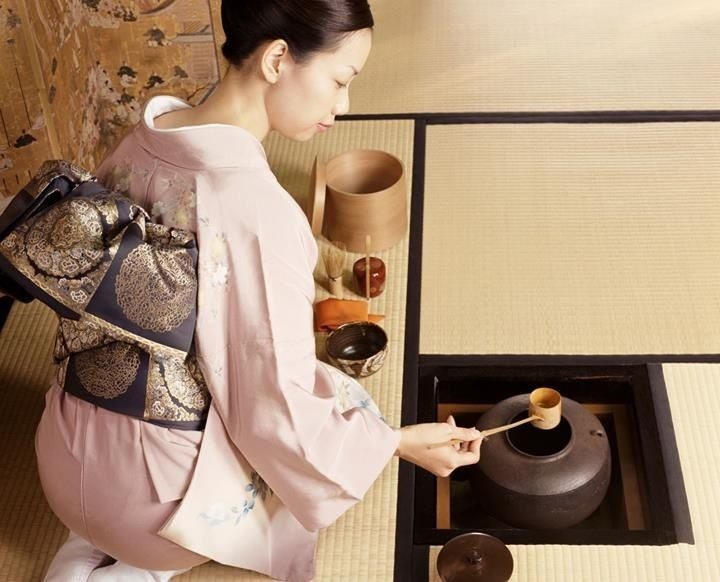

Post Terbaru

Mengenal lebih dalam upacara minum teh di Jepang!
Admin 30 June 2019Dengan sejarah yang merentang lebih dari seribu tahun, upacara minum teh telah menjadi bagian penting bagi kebudayaan jepang. Upacara minum teh merupakan upacara tradisi budaya turun temurun yang dilakukan Jepang sejak sebelum zaman edo.
Read More
Ini dia tujuh pendekar pedang Kirigakure!
Admin 29 June 2019Sejak zaman dahulu desa kabut atau yang biasa di sebut kirigakure mempunyai tujuh pedang mengerikan yang setiap pedangnya mempunyai kemampuan masing-masing. Yuk kenalan dengan pada pemegang pedang-pedang tersebut!
Read More
Ultraman terkuat menurut Oppa-Kun!
Admin 29 June 2019Hai!! Fams,kali ini OPPA-KUN akan menyediakan 3 ultraman terkuat sampai saat ini. Hingga saat ini sudah ada puluhan Ultraman yang pernah muncul di serial televisi dan movie-nya. Berikut ini merupakan tujuh Ultraman terkuat di antara mereka.
Read More
Review manga One Piece 946!
Admin 30 June 2019Chapter terbaru One Piece sudah tersedia ayo baca sekarang! ikuti perjalanan Monkey D Luffy beserta teman-temannya dalam mengarungi New World dalam asa untuk mendapatkan harta karun Gol D Roger, One Piece!
Read More